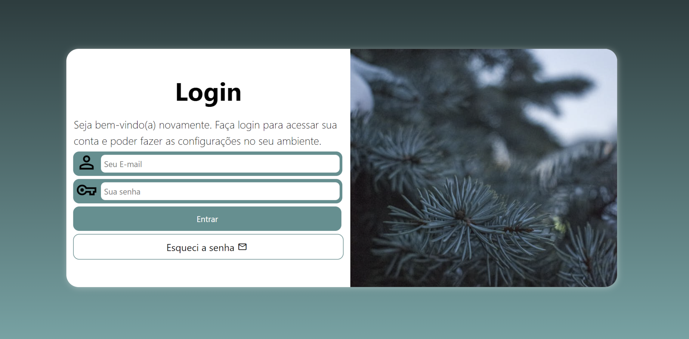
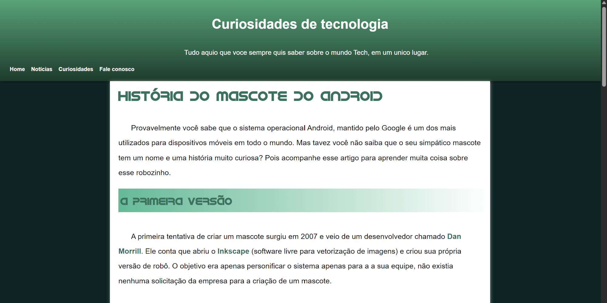
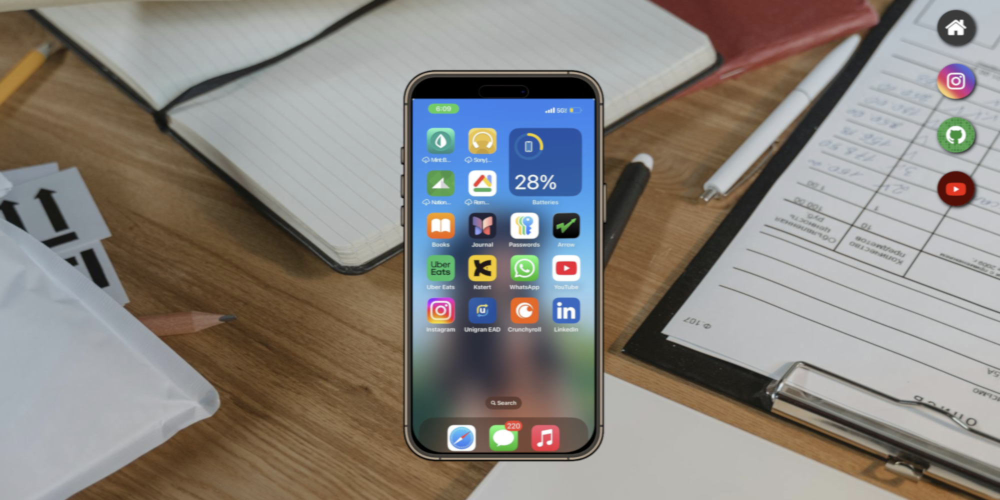

Matheus Azevedo
Estudante do primeiro semestre de Análise e Desenvolvimento de Sistemas, com conhecimento básico em Python, HTML5 e CSS3. Focado em desenvolver as habilidades necessárias para me tornar desenvolvedor Full‑Stack, criando projetos para aprimorar programação e resolução de problemas. Interessado em desenvolvimento de software, tecnologias web e crescimento contínuo na área de tecnologia.
Deixe-me apresentar
Minhas skills
Formação
2026
Tecnólogo em análise e desenvolvimento de sistemas (1º Semestre)
Centro Universitário da Grande Dourados (UNIGRAN)
2026
Python 3- lógica, estruturas de dados, funções, POO e arquivos.
Ambiente de Formação Tecnológica - Curso em Vídeo
2026
HTML5 e CSS3 - semântica, componentes de interface, responsividade, Flexbox, Grid e media queries.
Ambiente de Formação Tecnológica – Curso em Vídeo
2019 - 2020
Instrução Militar – Comunicações Operacionais
Exército Brasileiro – 3º BECmb
2017 - 2018
Formação Profissional em Elétrica Industrial
Centro de Formação Profissional SENAI
Projetos

2026
Projeto Login
Projeto construído para treinar responsividade e formulários em uma das telas mais populares em sistemas.
Saiba mais...
Criar uma tela de login é uma tarefa essencial para quem desenvolve sites. Além de funcional, ela precisa ser visualmente agradável, intuitiva e fácil de usar. Nesta proposta, a interface se adapta automaticamente a diferentes tamanhos de tela utilizando caixas flexíveis (Flexbox), garantindo uma experiência consistente e responsiva em qualquer dispositivo.

2026
Projeto Android
Projeto construído para treinar conteúdos e imagens dinâmicas com a História do sistema Android.
Saiba mais...
Você sabia que o Android não foi criado originalmente para celulares? Este projeto apresenta curiosidades sobre a história do sistema operacional mais utilizado no mundo e mostra como adaptar diferentes tipos de mídia para variados tamanhos de tela, garantindo uma experiência visual responsiva e moderna.
2026
Projeto Cordel
Projeto construído para treinar efeito parallax em imagens e a apresentaçao de conteúdo em diversos tamanhos de tela.
Saiba mais...
Apresentar conteúdo de forma criativa na web é sempre um desafio para desenvolvedores. Neste projeto, trazemos um cordel exibido de maneira bem‑humorada e totalmente responsiva, utilizando técnicas modernas como o efeito parallax para destacar as imagens de fundo e enriquecer a experiência visual.

2026
Projeto Redes Sociais
Projeto construído para treinar responsividade e múltiplos media queries e divulgar as suas principais redes sociais.
Saiba mais...
Este meta‑projeto permite que o visitante interaja com um smartphone virtual, cujo conteúdo muda dinamicamente sempre que um ícone de rede social é selecionado. A proposta combina interatividade e responsividade em uma interface bem elaborada, utilizando iframes como estrutura principal para carregar diferentes páginas dentro do dispositivo simulado.